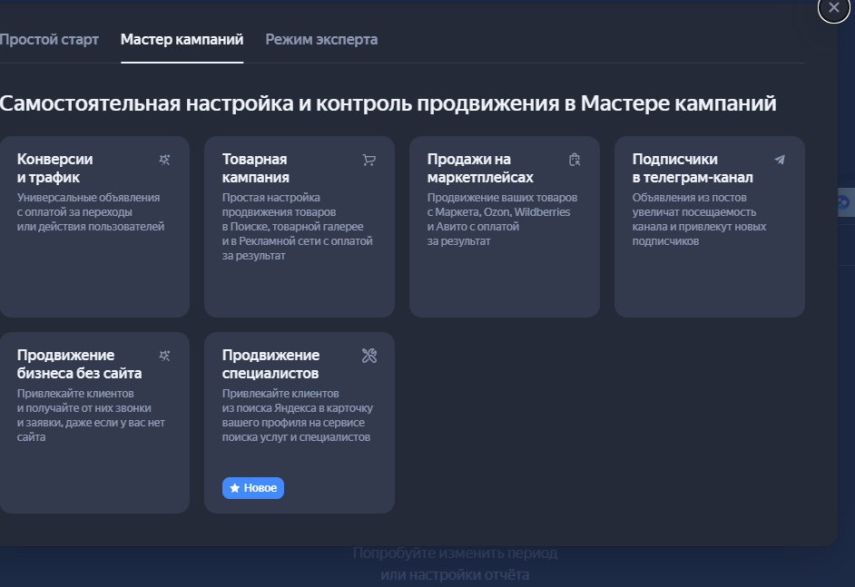

Самостоятельная академия для новичка: объяснения простыми словами, механика, термины, примеры, проверка знаний и материалы к каждому уровню.
Яндекс Директ · SEO · МетрикаУчитесь.
Учитесь.
Считайте.
Применяйте.
Полный рабочий справочник: уроки, правила, показатели, словарь, тренажёр и личные заметки.
0%
Ваш прогресс
Через локальный запуск данные сохраняются в файл проекта; при открытии одного HTML — в браузер.
Программа
Три академии в одном локальном проекте
Счётчик, цели, сегменты, Вебвизор, ecommerce, API и DataLens.
Базовый курс, карта продвинутых тем, показатели, правила и запуск.
Важно: учебная редакция пересказывает и систематизирует темы. Интерфейс и правила рекламной системы со временем меняются — проверяйте их по ссылкам на официальные материалы.
Прогресс по направлениям
Что уже освоено
Ведение проекта
Двигайтесь сверху вниз: каждый этап превращает неопределённость в проверяемый результат. Сквозной учебный кейс — стоматологическая клиника, которая продвигает имплантацию в Москве.
Как использовать: сотрудник изучает задачу и пример, выполняет работу по реальному или учебному проекту, записывает результат. Проверяющий оставляет комментарий. Этап отмечается завершённым только при выполненном критерии готовности.
Этапов проекта14от знакомства до сдачи
Завершено00% маршрута
Учебный кейсСтоматологияимплантация · Москва
Контроль проекта
Вносите фактические данные за одинаковые периоды. Платформа рассчитает воронку, сравнит CPS и ДРР с целями и подскажет, на каком уровне искать причину отклонения.
Правило: сначала проверяйте качество данных, потом локализуйте этап потери и только затем меняйте настройки. Один плохой день не доказывает тренд — учитывайте объём выборки и задержку продаж.
01 · Новый период
Добавить фактические показатели
02 · Динамика
План, факт и воронка
| Период | Расход | Клики | Лиды | Квал. | Продажи | Выручка | CPC | CPL | CR лид | Продажа из лида | CPS | ДРР |
|---|
03 · Диагностика
Что делать при отклонениях
Алгоритм
Куда смотреть по порядку
Достоверность
Сверьте период, расходы, дубли целей, CRM-статусы, отмены и задержку оплаты.
ПримерВ Директе 110 лидов, в CRM 96: 8 тестовых и 6 дублей нужно исключить до оценки.
Трафик
Если CPC или объём отклонились, смотрите кампании, запросы, площадки, географию и ограничения стратегии.
ПримерCPC вырос на 35% только в группе «имплантация цена» — проверяем аукцион и запросы этой группы.
Конверсия
Если клики есть, а лидов меньше, проверяйте сегмент, объявление, страницу, устройства и форму.
ПримерМобильный CR упал после новой формы; откатываем изменение и повторяем тест.
Продажи
Если лиды есть, а оплат меньше, проверьте качество, скорость ответа, квалификацию, визиты и причины отказа.
ПримерДоля записи снизилась с 42% до 25%, потому что 31% звонков остался без ответа.
Экономика
Если CPS и ДРР выше цели, пересчитайте маржу, AOV, выкуп и допустимую стоимость привлечения.
ПримерCPS 22 000 ₽ выше цели 18 000 ₽, но новый средний чек вырос: решение принимаем после пересчёта маржинальной прибыли.
Корректировка
Запишите одну гипотезу, владельца, срок, ожидаемый эффект и критерий остановки.
ПримерОтделить мобильный трафик и упростить форму; цель — CR не ниже 2,3% при прежней доле качественных лидов.
Лендинг: от рекламного клика до заявки
Лендинг не должен просто выглядеть красиво. Его задача — продолжить обещание объявления, снять сомнения, помочь принять решение и корректно передать результат в Метрику и CRM.
Главный принцип
Одно намерение — одно понятное предложение
Пользователь должен за несколько секунд понять: куда он попал, соответствует ли страница запросу, что ему предлагают, почему стоит доверять и что делать дальше.
Результат
Не заявка любой ценой
Оценивайте не только CR формы, но и качество лида, запись, продажу, выручку, CPS и ДРР.
Рабочая последовательность
Чек-лист подготовки лендинга
Пройдите восемь этапов до запуска рекламы. Под каждым этапом есть пример того, что следует записать сотруднику.
8 этапов
1Запрос, аудитория и действие
До прототипа⌄
Запрос, аудитория и действие
До прототипаЧто сделать
Выберите один кластер спроса, сегмент аудитории и конечное действие. Запишите проблему, контекст выбора и ограничения.
Что проверить
Запрос, объявление и страница говорят об одной услуге. Конечное действие измеряется и связано с продажей.
Пример заполнения
Запрос: «имплантация зубов под ключ Москва». Аудитория сравнивает клиники и боится скрытых расходов. Действие: запись на консультацию; бизнес-результат: оплаченный план лечения.
Ошибка
Вести все услуги клиники на одну главную страницу.
2Оффер и первый экран
Первые 3–5 секунд⌄
Оффер и первый экран
Первые 3–5 секундЧто сделать
Сформулируйте конкретный заголовок, пояснение, ключевое доказательство и основную кнопку. Покажите существенное условие цены.
Что проверить
Первый экран понятен без прокрутки, не содержит нескольких равнозначных действий и продолжает текст объявления.
Пример заполнения
«Имплантация под ключ в Москве — план лечения после КТ». Подзаголовок объясняет, что входит в расчёт. Кнопка: «Записаться на консультацию».
Ошибка
Абстрактный заголовок «Дарим красивые улыбки» без услуги и условий.
3Структура страницы
Путь принятия решения⌄
Структура страницы
Путь принятия решенияРекомендуемый порядок
Оффер → результат → кому подходит → состав услуги → процесс → цена/расчёт → доказательства → возражения → FAQ → действие → контакты и юридические данные.
Что проверить
Каждый блок отвечает на вопрос пользователя и приближает к решению. Повторы и декоративные блоки удалены.
Пример заполнения
Для ремонта квартир сначала показываем тип ремонта и ориентир стоимости, затем этапы, реальные сметы, гарантии, кейсы и форму вызова замерщика.
Ошибка
Начинать с истории компании, не объяснив услугу и цену.
4Доверие и доказательства
Почему вам можно верить⌄
Доверие и доказательства
Почему вам можно веритьЧто добавить
Реальные кейсы с исходными данными, фотографии, специалисты, документы, гарантии, условия, реквизиты и проверяемые отзывы.
Что проверить
Доказательство относится к конкретному обещанию. Цифры имеют контекст, а отзывы не выглядят вымышленными.
Пример заполнения
Кейс: квартира 64 м², срок 92 дня, итоговая стоимость 2,8 млн ₽, отклонение от сметы 3,2%; показаны фотографии и состав работ.
Ошибка
Логотипы неизвестных компаний и отзывы без имени, услуги и результата.
5Форма и призыв к действию
Минимум трения⌄
Форма и призыв к действию
Минимум тренияЧто сделать
Запрашивайте только необходимые поля, объясните следующий шаг, покажите ошибки понятно и подтвердите успешную отправку.
Что проверить
Форма работает на телефоне, с клавиатурой, при ошибке сети и повторном клике; событие отправляется только после успеха.
Пример заполнения
Поля: имя и телефон. Под кнопкой: «Администратор позвонит в течение 15 минут и предложит время». После ответа сервера показывается экран успеха.
Ошибка
Считать нажатие кнопки заявкой или требовать десять полей до разговора.
6Мобильность и скорость
Проверка реального устройства⌄
Мобильность и скорость
Проверка реального устройстваЧто проверить
Читаемость, размер кнопок, клавиатуру формы, липкие элементы, изображения, скачки макета и загрузку при мобильной сети.
Критерий
Основной смысл и действие доступны без масштабирования; тяжёлые элементы не блокируют первый экран.
Пример заполнения
На Android при 4G первый экран понятен, кнопка видима, маска телефона не закрывает отправку, изображения загружаются после основного содержания.
Ошибка
Проверить только уменьшением окна на компьютере.
7Метрика, CRM и QA
Доказать прохождение заявки⌄
Метрика, CRM и QA
Доказать прохождение заявкиЧто настроить
UTM, form_start, form_success, звонки, ClientID, CRM-статусы, страницу благодарности или событие успеха, исключение тестов и дублей.
Что проверить
Тест проходит от рекламной метки до CRM и конечного статуса; персональные данные не попадают в аналитику.
Пример заполнения
Тест TEST-LP-01: UTM сохранены, form_success один раз, ClientID записан в CRM, статус «квалифицирован» передан обратно.
Ошибка
Запустить рекламу, потому что «цель создана», не выполнив тестовую заявку.
8Запуск, анализ и улучшение
После накопления данных⌄
Запуск, анализ и улучшение
После накопления данныхЧто анализировать
Соответствие запросов, мобильный CR, начало/успех формы, звонки, качество лидов, продажи, Вебвизор и сегменты.
Как менять
Одна гипотеза — одно основное изменение — заранее выбранная метрика — достаточный объём — решение сохранить или откатить.
Пример заполнения
CR формы 7%, но квалификация 18%. Запросы слишком общие. Сначала разделяем кампании и уточняем оффер, а не увеличиваем кнопку.
Ошибка
Объявить лендинг плохим только из-за низкого CR без проверки трафика и качества результата.
CR низкий
Проверьте качество и соответствие трафика, мобильный первый экран, скорость, форму и конкретный сегмент. Не начинайте с косметического редизайна.
CR высокий, продаж мало
Проверьте обещание, квалификацию, спам, обработку, отмены, выкуп, CPS и ДРР. Возможно, лендинг привлекает лёгкие, но неценные заявки.
Форму начинают, но не отправляют
Сегментируйте по устройству и полю, посмотрите повторяющиеся записи, ошибки валидации и технический ответ сервера.
Как принять работу
Сотрудник показывает соответствие объявлению, протокол устройств, тест Метрики–CRM и одну обоснованную гипотезу после запуска.
Паспорт клиента
Заполните один раз. Эти данные сохраняются вместе с прогрессом, заметками и журналом задач.
Проект 0 → прибыль
Заполните проект сверху вниз. Платформа проверит обязательные данные, рассчитает экономические пределы, три сценария воронки, достаточность недельного бюджета и предложит стартовую логику стратегии.
Сначала бизнес, потом Директ
Бриф → экономика услуги → прогноз спроса → воронка → бюджет → стратегия → аналитика → запуск → план-факт. Ключевые слова без экономики не отвечают на вопрос, выгодна ли реклама.
Это прогноз, не обещание
Сценарии показывают последствия исходных допущений. После запуска заменяйте прогнозные CPC и конверсии фактическими данными Директа, Метрики и CRM.
Обязательнобез значения расчёт или решение ненадёжныЖелательноуточняет бюджет и ограниченияОпциональнонужно для документации и глубокого анализа
До расчёта
0Протокол встречи с заказчиком
Записывайте факты во время разговора. Они автоматически сохраняются вместе с проектом и попадают в Word-отчёт. Не полагайтесь на память и не смешивайте подтверждённые данные с предположениями.
Надёжность хранения: поля сохраняются в этом браузере автоматически. Для проекта на несколько недель подключите локальную папку в разделе «Заметки и копии» и после важных встреч скачивайте Word-отчёт.
Шаг 1
1Заказчик и рекламная задача
Фиксируем, что именно продаём, кому, где и какой результат считаем успехом. Если рекламировать «всю стоматологию», экономика и объявления смешаются.
Шаг 2
2Экономика одной продажи
Эти поля определяют, сколько бизнес действительно может заплатить за пациента или продажу. Нельзя подменять средний чек прибылью.
Шаг 3
3Спрос, аукцион и воронка
Прогнозные CPC и конверсии сначала берутся из Прогноза бюджета, прошлых кампаний или аналогичного проекта. После запуска их нужно заменить фактическими значениями.
Шаг 4 · обязательный этап
4Формирование семантического ядра
Здесь выполняется практическая работа перед созданием кампании: от исходных маркеров до готовой структуры групп объявлений. Поля сохраняются вместе с проектом и включаются в Word‑досье.
Результат этапа: очищенный список запросов, смысловые сегменты, карта спроса, минус‑фразы и таблица «группа → намерение → объявление → посадочная». Это основа структуры кампании, а не необязательное приложение.
Пример результата · стоматология
Сегмент: «All-on-4 — цена». Намерение: сравнить стоимость и выбрать клинику. Фразы: «all on 4 цена москва», «имплантация все на 4 стоимость». Минус‑смыслы: обучение, вакансии, лабораторные работы. Объявление: офер про план лечения и варианты оплаты. Посадочная: отдельная страница All-on-4, а не главная клиники.
Источники: урок Яндекса о сегментации · материал Яндекса о семантическом ядре.
Шаг 5
5Готовность аналитики
Экономика может быть хорошей, но автостратегия и оптимизация не работают надёжно, если цели срабатывают неверно или продажи не возвращаются из CRM.
Шаг 6
6Автоматический расчёт и решение
Базовый сценарий использует введённые значения. Осторожный предполагает CPC на 25% выше и обе конверсии на 25% ниже; оптимистичный — CPC на 20% ниже и конверсии на 20% выше. Это явные допущения, а не обещание.
Заполните обязательные поля
После заполнения появятся оценка бюджета, прибыльности и рекомендация стратегии.
Ориентир достаточности конверсионной стратегии: недельный бюджет не меньше 10 × прогнозная цена выбранной конверсии. Всегда сверяйте актуальные условия в официальной справке Яндекс Директа.
Журнал задач и отклонений
Каждая запись отвечает на вопросы: что произошло, почему это важно, что делаем, кто отвечает и когда проверяем результат.
Раздел
Курсы и правила
Каждый урок содержит определение, правила, практический чек-лист и переходы к связанным формулам или терминам.
Продвижение в Яндексе
Начните здесь, чтобы понять, какие бывают виды рекламы, где они показываются, как выбирается объявление и чем performance отличается от медийного продвижения.
Шаг 1
Два основных подхода
Заявки, заказы, продажи, установки приложения. Основные показатели: CPA, CPO, CPS, ДРР, ROAS и прибыль.
Формирует узнаваемость и интерес с помощью баннеров, видео и других заметных форматов.
Медийное продвижение создаёт спрос, performance помогает превратить его в измеримые действия.
Шаг 2
Где может показываться реклама
Поиск
Объявление появляется рядом с поисковой выдачей в ответ на запрос пользователя. Основные элементы: заголовок, текст, ссылка, быстрые ссылки, уточнения и контакты.
РСЯ
Объявления показываются на сайтах и в приложениях партнёров, а также в сервисах Яндекса. Используются изображения, видео и текстово-графические форматы.
Карты и геореклама
Помогают продвигать офлайн-точки и предложения с учётом местоположения пользователя.
Товарное продвижение
Карточки с изображением, ценой и характеристиками создаются по сайту или товарному фиду.
Приложения
Кампании оптимизируются на установки и события внутри приложений iOS и Android.
Ретаргетинг
Реклама возвращает пользователей, которые уже посещали сайт, смотрели товары или выполняли промежуточные действия.
Шаг 3
Как происходит показ
Рекомендуемый маршрут
В каком порядке изучать
Воронка → виды продвижения → Поиск и РСЯ → внешний вид объявления.
Ключевые фразы → минус-фразы → ЕПК → стратегии → объявления → посадочная.
Метрика → цели → UTM → CRM → CPA/CPO/CPS → оптимизация и отчёт.
Сравнение
Как выбрать формат
| Формат | Когда использовать | Основная настройка | Что измерять |
|---|---|---|---|
| Поиск | Есть сформированный спрос | Ключевые фразы, запросы, минус-фразы | CTR, CPC, CR, CPA/CPO/CPS |
| РСЯ | Нужно найти аудиторию, вернуть пользователя или расширить охват | Креативы, аудитории, автотаргетинг, площадки | CPM, CTR, CPC, CPA, post-view и качество лидов |
| Медийная | Нужно знание и запоминаемость | Охват, частота, сегменты, видео и баннеры | Охват, частота, CPM, VTR, brand lift |
| Товарная | Большой ассортимент и ecommerce | Фид, категории, цены, наличие | CPO, CPS, AOV, ДРР, ROAS |
| Геореклама | Офлайн-точки и локальный спрос | Радиус, регион, карточка организации | Маршруты, звонки, визиты и продажи |
| Приложения | Установки и события в приложении | Магазин, трекер, события, аудитории | CPI, CPA события, retention и доход |
Рабочая последовательность
От задачи до масштабирования
Бизнес-задача
Зафиксируйте продукт, аудиторию, географию, цикл сделки и итоговое действие: оплату, визит или квалифицированную заявку.
Экономика
Рассчитайте маржу, допустимые CPA/CPO/CPS, ДРР и бюджет. Без экономики нельзя оценить результат.
Аналитика
Настройте Метрику, макроцели, UTM, ecommerce, звонки и передачу статусов из CRM.
Канал
Выберите Поиск, РСЯ, товарное, гео, приложения или медийный формат по спросу и этапу воронки.
Запуск
Подготовьте структуру, семантику, аудитории, креативы, посадочные и чек-лист тестовых конверсий.
Оптимизация
Сравнивайте сегменты по качеству продаж, ведите журнал гипотез и меняйте один значимый фактор за раз.
Масштабирование
Расширяйте бюджет, семантику и аудитории только после проверки предельной экономики и загрузки бизнеса.
Сдача
Передайте отчёт план/факт, доступы, журнал изменений, инструкции и следующий backlog гипотез.
Практические модули
Шесть направлений продвижения
Поиск
Применять: сформированный спрос. Не применять изолированно: когда категорию ещё не ищут. Практика: соберите 10 запросов, разделите интенты и назначьте CPA.
Товарное продвижение
Применять: ecommerce с актуальным ассортиментом. Проверьте фид, цены, наличие и transaction_id. Практика: рассчитайте CPO, CPS, выкуп и ДРР категории.
Карты и геореклама
Применять: локальные точки и услуги. Практика: задайте регион, радиус, целевые звонки, маршруты и состоявшиеся визиты.
Ретаргетинг
Применять: повторные касания. Практика: создайте сегменты просмотра, корзины и покупки; задайте исключения и окно возврата.
Медийное продвижение
Применять: знание и охват. Практика: задайте аудиторию, частоту, CPM, VTR и способ оценки влияния на брендовый спрос.
Продвижение приложений
Применять: установки и события внутри приложения. Практика: определите CPI, целевое событие, retention и доход пользователя.
Официальное продолжение: откройте в курсе уроки «Продвижение в Директе», «Показатели эффективности», «Юнит-экономика», затем переходите к ЕПК, стратегиям и оптимизации.
Директ PRO · 4 официальных урока в одном рабочем модуле
Единая перфоманс‑кампания
Когда выбирать ЕПК, как разделять кампанию, группу и объявление, где задаются настройки, что проверить до запуска и как диагностировать результат.
Что такое ЕПК
Тип кампании в режиме эксперта для продвижения сайта, приложения, товаров на маркетплейсе, Telegram‑канала, страницы в соцсети или карточки организации.
Выбирайте ЕПК
- нужны несколько групп, таргетингов и типов объявлений;
- важен контроль структуры, стратегии и мест показа;
- планируются тесты, масштабирование, Коммандер или API;
- нужно связать Поиск, РСЯ, Карты и товарные форматы.
Сначала подготовьте основу
- рабочую цель Метрики и тестовую конверсию;
- допустимый CPA, ДРР или другой бизнес‑KPI;
- посадочную, фид или карточку организации;
- обоснование, почему простого Мастера кампаний недостаточно.
Отдельный сценарий: Telegram‑каналы нельзя объединять с другими местами показа в одной кампании; для них доступна стратегия «Максимум кликов».
Кампания → группа → объявление
Чтобы не искать настройки наугад, всегда определяйте уровень и область влияния.
Объект, места показа, стратегия, бюджет, сроки, расписание, общие UTM, корректировки, минус‑фразы, мониторинг сайта и уведомления.
География и условия: ключевые фразы, автотаргетинг, интересы, ретаргетинг, подбор аудитории и офферный ретаргетинг.
Заголовки, тексты, изображения, видео, быстрые ссылки, уточнения и контакты; для товаров — источник и фильтры.
Пример · стоматология
Кампания: сайт клиники, Поиск + РСЯ + Карты, цель «подтверждённая запись», недельный бюджет и UTM. Группы: имплантация, ортодонтия и гигиена — отдельные намерения, страницы и экономика. Объявления: свой офер и доказательства под услугу. «Имплантацию» и «чистку» не складываем в одну группу.
Смешанная или разделённая
Разделение оправдано только тогда, когда даёт реальный контроль и не лишает алгоритм данных.
| Подход | Когда выбирать | Плюс | Риск |
|---|---|---|---|
| Смешанная ЕПК | Небольшой бюджет, единая цель, мало конверсий. | Быстрее собираются сигналы, проще сопровождение. | Сложнее независимо управлять местами показа. |
| Раздельные кампании | Достаточно данных; различаются цель, экономика, гео, расписание, креативы или стратегия. | Отдельные бюджеты и чистая диагностика. | Дробление данных и медленное обучение. |
| Пакетная стратегия | Несколько кампаний работают на общий KPI и бюджет. | Ресурс распределяется между ними по эффективности. | Нельзя оценивать одну кампанию вне пакета. |
Для клиники: при 20–30 записях в месяц начать смешанно. Разделять Поиск и РСЯ после устойчивого объёма и доказанной необходимости разных стратегий.
14 шагов от нуля до модерации
У каждого блока есть проверяемый результат сотрудника.
1–4 · Основа
- Добавить → Кампания → Режим эксперта → ЕПК.
- Указать страницу, проверить счётчики и организацию.
- Выбрать места показа.
- Выбрать стратегию по цели, данным и экономике.
Результат: паспорт кампании с причиной выбора.
5–8 · Контроль
- Задать сроки и расписание.
- Добавить UTM и проверить итоговую ссылку.
- Осознанно настроить персонализацию, минус‑фразы, мониторинг и расширенное гео.
- Настроить уведомления и журнал.
Результат: выгрузка настроек и тестовая ссылка.
9–11 · Группы
- Разделить по намерению, продукту, странице или экономике.
- Задать географию и условия показа.
- Проверить конфликты и релевантность страниц.
Результат: группа → аудитория → условие → страница → KPI.
12–14 · Объявления
- Выбрать тип по объекту и источнику.
- Подготовить полный набор элементов.
- Проверить модерацию, мобильную страницу и тестовую конверсию.
Результат: лист приёмки и предпросмотр.
Что делать при отклонениях
Проверяйте всю цепочку: показ → клик → визит → цель → продажа.
| Сигнал | Проверить | Действие |
|---|---|---|
| Нет показов | Статус, модерацию, даты, оплату, гео и объём аудитории. | Устранить блокировку; расширять по одному фактору. |
| Низкий CTR | Запросы/аудитории, заголовок, изображение, конкурентов. | Разделить интенты и провести чистый тест. |
| Клики есть, целей нет | Цель, тестовую заявку, скорость, мобильную форму и офер. | Не менять ставки до сквозного QA. |
| CPA выше плана | CPC, CR, качество лидов, обучение и ограничения. | Локализовать этап; не лечить всё снижением бюджета. |
| CPA нормальный, продаж мало | CRM‑статусы, дозвон, квалификацию, CPS и ДРР. | Передавать качественные офлайн‑конверсии и ценность. |
Чек‑лист сотрудника · 12 проверок
Проверка знаний
1. Где задаются ключевые фразы и интересы?
2. Когда смешанная структура особенно полезна?
3. Клики есть, целей нет. Первое действие?
Ответьте на все вопросы.
Результат сотрудника
ЕПК ↗ · Создание ЕПК ↗ · Сценарии и структура ↗ · Таргетинги ↗
Типы продвижения и Товарная кампания
Сначала определяем бизнес-задачу и выбираем подходящий сценарий Мастера кампаний. Затем подробно настраиваем Товарную кампанию для ассортимента: источник товаров, объявления, аудиторию, цели, бюджет, проверку и запуск.

01 · Правильный выбор
Шесть типов Мастера кампаний
Конверсии и трафик
Зачем: привести людей на сайт и получить измеримые действия: заявку, звонок, заказ, регистрацию или переход.
- Есть сайт или посадочная страница
- Нужен универсальный сценарий для услуги или товара
- Настроена Метрика и понятна целевая конверсия
Выбирайте, если: главная точка конверсии находится на вашем сайте, а ассортимент не требует отдельного товарного управления.
Официальная инструкция ↗
Товарная кампания
Зачем: автоматически продвигать большой ассортимент товаров в Поиске, товарной галерее и РСЯ, используя сайт, фид или ручное добавление.
- Интернет-магазин или каталог
- Цены и наличие меняются
- Нужно продвигать отдельные товары и категории
Выбирайте, если: объект продвижения — товары или категории, а объявления должны формироваться из товарных данных.
Официальная инструкция ↗
Продажи на маркетплейсах
Зачем: вести аудиторию прямо на карточки товаров в Маркете, Ozon, Wildberries, Авито и поддерживаемых площадках.
- Нет собственного магазина или основной оборот на маркетплейсе
- Цель — продажи конкретных карточек
- Нужна внешняя реклама ассортимента
Выбирайте, если: итоговая покупка проходит на маркетплейсе, а не на вашем сайте.
Официальная инструкция ↗
Подписчики в телеграм-канал
Зачем: приводить новую аудиторию к постам или каналу и увеличивать число подписчиков.
- Контент регулярно обновляется
- Понятна ценность подписки
- Есть план удержания и измерения качества аудитории
Выбирайте, если: конечное действие — переход или подписка на телеграм-канал, а не заявка на сайте.
Официальная инструкция ↗
Продвижение бизнеса без сайта
Зачем: получать звонки, сообщения и обращения, когда собственной посадочной страницы ещё нет.
- Есть понятное описание бизнеса и контакты
- Заявки можно принимать по телефону или в мессенджере
- Нужно быстро проверить спрос
Выбирайте, если: сайта нет, но клиент уже может связаться с бизнесом и получить услугу.
Официальная инструкция ↗
Продвижение специалистов
Зачем: привлекать клиентов из поиска Яндекса в карточку профессионала в сервисе поиска услуг и специалистов.
- Продвигается конкретный специалист
- Заполнен профиль, услуги, регион и доказательства опыта
- Главная конверсия — обращение из карточки
Выбирайте, если: продаётся личная профессиональная услуга, а основной актив — карточка специалиста.
Официальная инструкция ↗
02 · Не перепутать
Как принять решение за минуту
| Что продвигаем | Куда ведём пользователя | Основной тип | Что измеряем |
|---|---|---|---|
| Услугу или отдельное предложение | Сайт или лендинг | Конверсии и трафик | Заявки, звонки, заказы, CPA |
| Большой ассортимент товаров | Карточки товаров и категории сайта | Товарная кампания | Покупки, CPO/CPS, выручка, ДРР |
| Товары на внешней площадке | Маркетплейс | Продажи на маркетплейсах | Переходы и доступные данные о продажах |
| Контент и сообщество | Телеграм-канал | Подписчики в телеграм-канал | Переходы, подписки, стоимость подписчика |
| Локальный бизнес без сайта | Звонок, сообщение, карточка бизнеса | Продвижение бизнеса без сайта | Обращения и стоимость контакта |
| Частного профессионала | Карточка специалиста | Продвижение специалистов | Обращения и стоимость клиента |
Не выбирайте тип только потому, что он проще. Отталкивайтесь от места, где происходит целевое действие, способа передачи данных и объекта продвижения. Для большого интернет-магазина обычная кампания «Конверсии и трафик» не заменяет управляемые товарные данные и фильтры.
03 · Глубокий модуль
Когда нужна Товарная кампания
Подходит
- Интернет-магазину с десятками или тысячами SKU
- Каталогу с товарами и понятными карточками
- Бизнесу с меняющейся ценой и наличием
- Проекту с настроенной электронной коммерцией или передачей продаж
Не готова к запуску
- Карточки пустые, цены и наличие неверны
- Нет целей покупки или CRM-данных
- Не рассчитаны маржа, допустимый CPO/CPS и ДРР
- Фид содержит ошибки или смешивает несопоставимые категории
04 · Данные
Четыре способа добавить товары
Товары с сайта
Алгоритм находит карточки автоматически. Подходит, когда фида ещё нет, но сайт технически понятен и данные на страницах актуальны.
Фид по ссылке
Регулярно обновляемый XML/YML/другой поддерживаемый источник. Удобен для большого ассортимента, цен, наличия и фильтров.
Фид файлом
Подходит для контролируемой выгрузки, но требует дисциплины обновления: старые цены и остатки быстро делают рекламу некорректной.
Вручную
Название, ссылка и изображение добавляются для каждого товара. Используйте для небольшого теста, а не для сотен позиций.
Практическое правило: для регулярно меняющегося ассортимента используйте фид по ссылке; при отсутствии фида начните с автоматического поиска товаров на сайте; ручной способ оставьте для небольшого количества предложений.
05 · От создания до запуска
Рабочая последовательность
Подготовить экономику
Определите маржу, допустимый CPO/CPS, максимальный ДРР, приоритетные категории и товары, которые нельзя рекламировать.
Пример: маржа заказа 4 000 ₽, допустимый CPS с запасом — 2 000 ₽, рабочий ДРР — не более 18%.
Проверить аналитику
Свяжите Директ и Метрику, настройте ecommerce-покупку, доход, ClientID и при необходимости офлайн-конверсии из CRM.
Готовность: тестовая покупка видна с ID заказа и корректной суммой.
Создать кампанию
Кампании → Добавить → Кампания → Мастер кампаний → Товарная кампания. Укажите сайт или страницу поддерживаемого маркетплейса и понятное название.
Название: TK · РФ · Все товары · Покупка · 07-2026.
Подключить организацию и разметку
Проверьте ссылку до дальнейшей настройки: её замена может сбросить заполненные параметры. Добавьте организацию, если она нужна для Карт, и согласованную UTM-разметку.
Проверка: URL открывается, метки не теряются, персональных данных в параметрах нет.
Добавить товары и фильтры
Подключите сайт, фид по ссылке, файл или ручной список. Разделите ассортимент по категории, цене, марже, наличию или бизнес-приоритету.
Пример: отдельно диваны с маржой от 25%, исключены товары без остатка и позиции дешевле 5 000 ₽.
Добавить страницы каталога
Используйте найденные категории или коллекции из фида. Включайте только релевантные разделы; фильтр «соответствующие товарам» помогает убрать лишние каталоги.
Когда полезно: пользователь выбирает категорию, а не заранее определённую модель.
Собрать элементы объявления
Подготовьте совместимые варианты заголовков, текстов, изображений, видео и быстрых ссылок. Проверьте каждую комбинацию в предпросмотре Поиска и РСЯ.
По конспекту урока: до 5 заголовков, 3 текстов, 5 изображений, 2 видео и 8 быстрых ссылок — актуальные лимиты сверяйте в интерфейсе.
Настроить аудиторию
Задайте регион, расписание и часовой пояс. Можно использовать автоматический подбор или ручные тематические слова, интересы и минус-фразы.
Пример: Москва и область, круглосуточно для ecommerce; исключены «бесплатно», «б/у», «ремонт».
Выбрать цель и ограничения
Основная цель интернет-магазина — подтверждённая ecommerce-покупка или более глубокая продажа. Стоимость конверсии или доля дохода должна следовать из юнит-экономики.
Не делайте: не назначайте добавление в корзину единственной целью, если покупок достаточно для обучения.
Бюджет, QA и запуск
Проверьте прогноз и объём данных. В уроке предлагается ориентир недельного бюджета не ниже десяти стоимостей конверсии; воспринимайте его как стартовую проверку, а не гарантию результата.
Перед запуском: сохранить черновик, проверить фид, ссылки, цели, маркировку, модерацию и баланс.
06 · Объявления
Что и зачем добавляем
| Элемент | Зачем нужен | Как проверить | Частая ошибка |
|---|---|---|---|
| Товарное объявление | Показать конкретный товар, цену и изображение пользователю с подходящим спросом | Цена, наличие, URL и картинка совпадают с карточкой | Рекламируется отсутствующий товар |
| Страница каталога | Привести пользователя в релевантную категорию, когда конкретный SKU ещё не выбран | Категория содержит ассортимент и фильтры, а не пустую страницу | Слишком широкая или нерелевантная категория |
| Объявление магазина | Объяснить общее преимущество магазина: доставка, гарантия, ассортимент, оплата | Любая комбинация текста и изображения логична | Общие обещания без подтверждения на сайте |
| Быстрые ссылки | Дать дополнительные пути в популярные категории, доставку, оплату и акции | Каждая ссылка работает, метки корректны, первые ссылки самые важные | Дублирование основной страницы |
| Изображения и видео | Повысить заметность и раскрыть товар или сценарий использования в РСЯ | Ключевой объект виден на мобильном, нет мелкого текста и неверной цены | Красивый креатив не соответствует товару |
07 · Диагностика
Если результат отклоняется
| Симптом | Сначала проверить | Что делать |
|---|---|---|
| Товары не загружаются | Формат, доступность URL, обязательные поля, ошибки фида | Исправить источник, повторно проверить обработку и количество принятых предложений |
| Есть показы, мало кликов | Цены, изображения, заголовки, конкурентность и соответствие запросу | Разделить категории и протестировать другое предложение, не менять всё одновременно |
| Клики есть, покупок нет | Карточку товара, мобильную версию, наличие, доставку, корзину и цели | Сделать тестовый заказ и локализовать провал воронки до изменения стратегии |
| Много заказов, высокий ДРР | Выкуп, маржу, средний чек, категории и фактические продажи | Передать оплаты, отделить низкомаржинальные товары и скорректировать целевой KPI |
| Кампания почти не расходует бюджет | Слишком низкую цену конверсии, объём цели, аудиторию и ограничения | Сравнить заданный KPI с фактической экономикой и расширять ограничения только обоснованно |
08 · Учебный кейс
Интернет-магазин мебели
Вводные: 1 200 товаров, средний чек 45 000 ₽, средняя маржа 27%, выкуп 82%, покупки передаются через ecommerce, остатки обновляются ежедневно.
- Выбираем Товарную кампанию, потому что продвигается большой ассортимент на собственном сайте.
- Подключаем YML-фид по ссылке, чтобы цены и наличие обновлялись автоматически.
- Создаём отдельные фильтры для диванов, кроватей и столов; товары без остатка исключаем.
- В качестве основной цели используем ecommerce-покупку с доходом, дополнительно контролируем фактический выкуп из CRM.
- Оцениваем не только CPO, но CPS, выручку, ДРР и маржинальный результат по категориям.
Результат решения: структура кампании следует ассортименту и экономике. Низкомаржинальные товары не смешиваются с приоритетными, а алгоритм получает данные о реальных покупках.
09 · Проверка сотрудника
Чек-лист готовности
Результат сотрудника
Заполните по образцу: бизнес → выбранный тип → почему → источник товаров → фильтры → цели → экономика → бюджет → проверки → риски → дата первого анализа.
Поисковая реклама
Поиск работает со сформированным спросом: пользователь уже формулирует потребность. Задача специалиста — сопоставить запрос, объявление, посадочную страницу и бизнес-цель.
01 · Семантика
От запроса к группе
Ключевая фраза ≠ запрос
Фраза задаётся рекламодателем, запрос вводит пользователь. Оптимизация строится по фактическим запросам, а не только по загруженному списку ключей.
Интент
Разделяйте коммерческие, информационные, брендовые, конкурентные, геозависимые и околоцелевые запросы. Разным намерениям нужны разные офферы.
Минус-фразы
Исключайте нежелательный смысл, а не слово вслепую. Проверяйте, чтобы исключения не перекрывали целевые запросы и автотаргетинг.
Кластеризация
Одна группа объединяет близкую потребность, объявление и посадочную. Не смешивайте разные услуги и этапы готовности к покупке.
02 · Запуск
Рабочая последовательность
Собрать спрос
Wordstat, сайт, конкуренты, Метрика, CRM, подсказки и язык клиентов.
Разделить интенты
Связать кластер с оффером, страницей, целью и допустимым CPA/CPO.
Подготовить объявления
Заголовок отвечает запросу, текст раскрывает ценность, дополнения усиливают выбор.
Проверить аналитику
UTM, цели, звонки, CRM, тестовая заявка, продажа и выручка.
Запустить и чистить запросы
В первые недели проверять чаще, фиксировать минусовку и расширение семантики.
03 · Диагностика
Что означает результат
| Симптом | Проверить | Действие |
|---|---|---|
| Низкий CTR | Интент, заголовок, дополнения, позицию | Пересобрать группы и сообщение; не оценивать без контекста позиции |
| Высокий CPC | Конкуренцию, качество, запросы, стратегию | Работать с релевантностью и экономикой, а не только снижать ставку |
| Есть лиды, нет продаж | Запросы, квалификацию и CRM | Передать продажи в аналитику и исключить нецелевые интенты |
| Мало трафика | Частотность, операторы, минусовку, бюджет | Проверить чрезмерное сужение и расширить семантику по смыслу |
Работа с рекламным кабинетом
Пошаговая процедура от доступов и структуры ЕПК до первых дней после запуска. Интерфейс может меняться, поэтому ориентируйтесь на смысл настройки, а не только на расположение кнопки.
Аккаунт и доступы
Рабочий аккаунт компании, представители, организация, платёжные данные и минимально необходимые права.
Цель и стратегия
Выбрать конечную конверсию, ограничения бюджета, допустимую стоимость и достаточный объём данных.
Структура ЕПК
Кампания → группа → объявление → условие показа. Деление должно поддерживать аналитику и управление оффером.
Таргетинги
География, расписание, устройства, аудитории, корректировки, ключи, автотаргетинг и исключения.
Креативы и страницы
Проверить единое обещание, актуальность цены, мобильность, скорость, формы и обязательные сведения.
Контроль запуска
Модерация, тестовая конверсия, списание, метки, звонок, заказ, выручка и журнал исходного состояния.
Первые дни
Регламент контроля
Первые 24 часа
- статус показов и модерации;
- корректность расходов;
- поисковые запросы и площадки;
- передача целей и дохода;
- критические ошибки страниц.
Первая неделя
- накопление данных без преждевременных выводов;
- качество лидов и продаж;
- срезы по группам, устройствам, регионам;
- журнал изменений;
- план следующей гипотезы.
Аккаунт и профессиональная настройка РК
Практический урок по созданию учебной Единой перфоманс-кампании: от безопасного доступа до группы, объявления и проверки перед запуском. Здесь «РК» означает рекламную кампанию; «АПК» в заметке, вероятнее всего, было опечаткой.
Важно: выполняйте упражнение на учебном проекте без пополнения баланса и без запуска показов. Схемы ниже воспроизводят логику интерфейса, а не являются буквальными снимками аккаунта: названия и расположение элементов Яндекс может менять.
01 · Доступы
Создать рабочий контур
Не использовать личный логин сотрудника
Владелец бизнеса сохраняет главный доступ, сотрудник получает роль представителя или доступ управляющего аккаунта.
Пример результатаГлавный аккаунт: owner@company. Сотрудник: direct-specialist@company, уровень «Редактирование». Доступ к оплатам не передаётся без необходимости.
Зафиксировать карту доступов
Запишите владельца, исполнителя, уровень прав, дату выдачи и порядок отзыва доступа.
Пример результатаТаблица: сервис «Директ» → владелец Анна → исполнитель Илья → редактирование → проверка доступа 01.08.2026.
Ваши представители
Откройте слева Инструменты, затем Ваши представители.
Добавить управляющий аккаунтВведите рабочий логин и выберите минимально достаточный уровень: чтение, редактирование или администрирование.
Официальная логика: «Инструменты → Ваши представители → Добавить управляющий аккаунт». Не передавайте пароль от главного аккаунта.
02 · Кампания
Создать ЕПК в режиме эксперта
Добавить ▾
Нажмите Добавить → Кампанию.
Вкладки: Мастер кампаний | Режим эксперта
Выберите Режим эксперта → Единая перфоманс-кампания.
Страница сайта: https://clinic.example/implant
Учебный пример: «SEARCH | Имплантация | Москва | Лиды | 2026-08». Название объясняет канал, продукт, географию, цель и период.
03 · Настройки кампании
Задать общий уровень
Места показа
Для учебного поискового проекта выберите только Поиск, чтобы не смешивать поведение Поиска и РСЯ.
ПримерПоиск — отдельная кампания. РСЯ и ретаргетинг будут созданы отдельно.
Стратегия
Выберите цель, по которой есть корректные данные, и задайте бюджетное ограничение.
ПримерЦель «Отправка формы консультации»; недельный бюджет 35 000 ₽; целевая цена — после расчёта допустимого CPA.
Расписание и география
Учитывайте фактическую зону обслуживания и возможность быстро обработать обращение.
ПримерМосква + 15 км; показы 08:00–22:00, когда администратор клиники принимает звонки.
Счётчик и цели
Подключите нужный счётчик Метрики и проверьте цель тестовой отправкой.
ПримерСчётчик 12345678; макроцель «lead_implant»; звонок считается отдельно.
04 · Группа
Настроить аудиторию и условия показа
Группа «Имплантация одного зуба»
География: Москва
Тематические слова / ключевые фразы
Добавьте один близкий кластер: «имплантация зуба цена», «поставить имплант», «имплантация под ключ».
Минус-фразы
Добавьте исключения: бесплатно, обучение, вакансии, своими руками. Проверьте, что они не блокируют целевые запросы.
На уровне группы ЕПК задаются таргетинги: география, автотаргетинг, тематические слова, интересы, сегменты и другие условия.
05 · Объявление
Собрать сообщение и посадочную
Заголовок: Имплантация зуба в Москве
Текст: План лечения после консультации. Рассрочка. Гарантия по договору.
Ссылка: /implant?utm_source=yandex&utm_medium=cpc…
Добавьте несколько вариантов элементов, но не обещайте то, чего нет на посадочной странице.
Проверьте ссылку, контакты, цену, быстрые ссылки, изображение и юридические требования.
В актуальной ЕПК Яндекс развивает комбинаторные объявления; доступные поля и форматы могут различаться по месту показа.
06 · Контроль
Не запускать до прохождения проверки
Задание сотруднику
Создайте черновик кампании для стоматологии без запуска. Приложите структуру, список групп, семантику, минус-фразы, два варианта объявления и скрин результата тестовой цели.
Метрика, CRM и продажи
Метрика видит визит и действия на сайте, CRM — квалификацию, запись, оплату и повторную продажу. Сквозная аналитика соединяет рекламный источник с фактическим результатом бизнеса.
01 · Карта данных
Что соединяем
Реклама
Кампания, группа, объявление, ключ, площадка, расходы и клики.
Метрика
ClientID, визит, источник, UTM, цель, ecommerce и доход.
Телефония
Динамический номер, звонок, длительность, запись и качество разговора.
CRM
Лид, MQL/SQL, заказ, отказ, оплата, выкуп, сумма и причина потери.
Офлайн-конверсия
Возврат квалификации и продаж в аналитику для обучения стратегии.
Отчёт
Клик → лид → продажа → выручка → маржа → прибыль.
02 · Measurement plan
План измерений
| Бизнес-событие | Система | Идентификатор | Показатель |
|---|---|---|---|
| Отправка формы | Метрика | ClientID + UTM | CPA/CPL |
| Квалифицированный лид | CRM | lead_id + ClientID | Стоимость MQL/SQL |
| Заказ | CRM/ecommerce | transaction_id | CPO, AOV |
| Оплата/выкуп | CRM | order_id | CPS, ДРР, ROAS |
| Повторная покупка | CRM | customer_id | LTV, retention |
Правило: не передавайте персональные данные в URL, UTM или параметры Метрики. Используйте внутренние идентификаторы и соблюдайте применимые требования к данным.
03 · Расхождения
Почему цифры не совпадают
Разные модели атрибуции
Источник конверсии может распределяться по-разному. Фиксируйте модель в каждом отчёте.
Разные часовые пояса и периоды
Проверяйте границы дат, валюту, НДС и время фиксации оплаты.
Дубли и потери
Уникальный transaction_id, повторная отправка формы, блокировщики и технические ошибки влияют на итог.
Разные статусы
Заявка, заказ и оплата — разные события. Нельзя сравнивать их как один показатель.
Контроль полноты · Яндекс про Директ: продвинутый
Карта курса PRO · 107 уроков
Это служебная карта, а не ещё один конспект. Она показывает, какой официальный урок уже проверен, в какой раздел платформы встроено знание и что ещё ожидает сверки. Пользователь изучает материал в тематических разделах, а здесь контролирует полноту.
Принцип интеграции: существующая тема расширяется на своём месте. Отдельная страница создаётся только для крупной самостоятельной области — например, экспериментов, модерации, медийной рекламы или продвижения приложений.
Вывод по продвинутому курсу
Директ Про · доказательная оптимизация
A/B‑эксперименты
Как проверить гипотезу, не перепутав эффект изменения с сезонностью, различием аудиторий или случайным колебанием данных.
Определение
В классическом A/B‑тесте аудитория заранее разделяется между сопоставимыми вариантами. Вариант A — контроль, B — изменение. Во время теста меняют один значимый фактор и сравнивают всю воронку.
Рабочий процесс
От гипотезы до решения
«Число в заголовке повысит CTR без ухудшения CPA».
Главная: CPA. Диагностические: CTR, CPC, CR.
Одинаковые условия, отличается только проверяемый фактор.
Не останавливать тест из‑за красивого результата первых дней.
Масштабировать, повторить или отклонить с зафиксированным выводом.
Пример теста объявления
| Элемент | A · контроль | B · гипотеза | Как оценить |
|---|---|---|---|
| Заголовок | «Курсы английского онлайн» | «Заговорите по‑английски за 3 месяца» | Сначала CTR/CPC, затем CR, CPA и качество заявки. |
| Остальные условия | Одинаковые аудитория, регион, стратегия, бюджет, расписание и посадочная. | Если одновременно поменять лендинг и аудиторию, причину результата определить нельзя. | |
| Решение | CTR 5%, CPA 3 000 ₽ | CTR 7%, CPA 2 450 ₽ | B можно развивать, если качество и последующие продажи не ухудшились. |
Главная ошибка: выбирать победителя только по CTR. Рост кликабельности бесполезен, если клики не превращаются в целевые действия, продажи или прибыль.
Что можно тестировать
- заголовок, текст, УТП и креатив;
- структуру кампаний и места показа;
- цену или ценность конверсии;
- таргетинг, аудиторию и стратегию;
- посадочную страницу — в отдельном чистом тесте.
Когда тест не готов
- нет достаточного бюджета и событий;
- сломаны цели или CRM;
- варианты стартовали в разные периоды;
- в процессе внесены посторонние изменения;
- нет заранее заданной главной метрики.
Чек‑лист эксперимента
Директ · правила и безопасность
Модерация, ограничения и запреты
Практическая проверка текста, изображений, ссылок и документов до отправки кампании. Правила могут обновляться — перед реальным запуском всегда сверяйтесь с официальной Справкой.
Запрещённые категории
В уроке среди примеров указаны азартные игры, алкоголь, табачные изделия, наркотические вещества, оружие, финансовые пирамиды, политика, рецептурные лекарства и незаконная деятельность.
Действие: не пытаться обходить запрет формулировками, редиректами или скрытой посадочной.
Тематики с ограничениями
Медицина и фармацевтика, здоровье и красота, спортивное и детское питание, финансовые услуги, недвижимость и пассажирские перевозки могут требовать особых текстов и разрешающих документов.
Действие: заранее определить юридическое лицо, регион, лицензию, предупреждения и комплект документов.
Что проверяет модерация
Текст
- понятен объект продвижения;
- нет ошибок, грубых выражений и бессмысленных повторов;
- нет необоснованных гарантий и ложных обещаний;
- капслок используется только там, где допустим;
- превосходная степень подтверждается независимым основанием.
Изображение
- соответствует товару или услуге;
- чёткое и качественное;
- не содержит QR‑код;
- не имитирует кнопки Play, закрытия или другой интерфейс;
- не вводит пользователя в заблуждение.
Сайт и ссылка
- страница открывается и соответствует объявлению;
- цены, условия, контакты и юридические сведения согласованы;
- нет автоматических перенаправлений на другой объект;
- мобильная версия работоспособна.
Если отклонено
- Открыть конкретную причину.
- Сравнить объявление и посадочную с правилом.
- Исправить причину, не маскировать её.
- Подготовить документы.
- При споре обратиться в поддержку с фактами.
Предмодерационный контроль
Верхняя часть воронки
Медийная реклама
Формирует знание и спрос через визуальный контакт. Она дополняет перфоманс: сначала аудитория замечает и запоминает бренд, затем ищет и совершает действие.
Охват→Качественный контакт→Запоминание→Поиск бренда→Конверсия
| Подход | Задача | Оплата и метрики | Пример |
|---|---|---|---|
| Медийный | Формирование спроса и знания. | Показы/просмотры, охват, частота, видимость, досмотры, brand lift, поисковый интерес. | Новый бренд спортивной одежды знакомит аудиторию с позиционированием. |
| Перфоманс | Работа с уже сформированным спросом. | Клики, конверсии, CPA/CPO/CPS, ДРР, прибыль. | Пользователь ищет конкретную модель и переходит к покупке. |
Форматы и сценарии
- баннеры и HTML5;
- видеореклама;
- аудиореклама;
- наружные цифровые поверхности;
- цепочки коммуникации и последующий перфоманс.
Критерий видимости из урока
Показ считается видимым, когда не менее половины площади объявления находится в зоне видимости: для видео — 2 секунды, для баннера — не менее 1 секунды.
Это минимальный технический контакт, а не доказательство запоминания или продажи.
Как планировать
- Определить аудиторию и задачу.
- Выбрать охват и частоту.
- Подготовить креативы и brand safety.
- Настроить связку с перфомансом.
- Задать окно оценки и контрольную группу.
Когда не стоит
- нет понятной цели верхней воронки;
- малый бюджет не даёт частоту и охват;
- перфоманс и аналитика ещё сломаны;
- результат требуют оценить только последним кликом.
Чек‑лист медийной кампании
Директ + AppMetrica
Продвижение приложений
От подготовки приложения и аналитики до кампании, событий, постбэков и оценки не только установки, но и дальнейшей ценности пользователя.
Подготовка продукта
Проверить карточку в магазине, стабильность, deep links, политику конфиденциальности и путь пользователя.
AppMetrica и SDK
Разработчик подключает библиотеку и проверяет передачу данных; маркетолог задаёт нужные события.
События воронки
Установка → запуск → регистрация → ключевое действие → покупка/подписка. Не оптимизировать только по дешёвой установке.
Трекер и постбэки
Зафиксировать источник, кампанию и дальнейшие события; проверить тестовую установку и событие.
Запуск и оптимизация
Сравнивать CPI, стоимость регистрации/покупки, retention, доход и окупаемость по когортам.
Роли
Разработчик: SDK, события, deep links, техническое тестирование.
Маркетолог: карта событий, трекер, цели, кампания и анализ.
Продукт/аналитик: ценность события, retention и экономика.
Учебный пример
Сервис доставки получил дешёвые установки, но мало первых заказов. Оптимизацию переводят с install на first_order после проверки достаточного объёма, а отчёт строят по CPI, CR установки в заказ и CPA заказа.
Чек‑лист запуска приложения
Профессиональное управление
Коммандер, Excel и массовые операции
Инструменты ускоряют работу с десятками кампаний, но одна устаревшая выгрузка способна перезаписать изменения команды. Поэтому скорость всегда сопровождается резервной копией и контролем.
| Инструмент | Когда полезен | Главный риск | Безопасный процесс |
|---|---|---|---|
| Директ Коммандер | Массовая работа с ЕПК и медийными кампаниями, фильтрация и офлайн‑редактирование. | Локальные данные не синхронизируются автоматически; можно затереть свежие правки коллег. | Получить актуальные данные → сделать копию → изменить → проверить → отправить → сверить веб‑интерфейс. |
| Excel‑шаблон | Массовое создание и изменение объявлений, фраз, ссылок, регионов и ставок. | Ошибки столбцов, кодировки, связей и массовая нежелательная замена. | Сохранить исходник → работать с малой выборкой → проверить строки → загрузить → проверить применённые изменения. |
| Веб‑интерфейс | Точечные операции, понятная визуальная проверка, финальное подтверждение. | Ручные действия занимают время и могут быть непоследовательными. | Использовать фильтры и массовые действия, вести журнал изменений. |
Коммандер: обязательная синхронизация
- Получить список кампаний.
- Получить все данные или нужный набор.
- Внести изменения.
- Проверить ошибки.
- Отправить данные на сервер.
- Проверить результат в Директе.
Excel: полезные операции
- найти и заменить;
- текст по столбцам;
- удаление дубликатов и пустых строк;
- фильтры и сортировка;
- контроль формата ссылок и минус‑фраз.
Перед массовой отправкой
- отфильтровать точный набор;
- посчитать количество изменяемых сущностей;
- сохранить резервную выгрузку;
- проверить 3–5 строк вручную;
- назначить ответственного за откат.
После отправки
- проверить статус и ошибки;
- открыть объявления и ссылки;
- сверить регионы, ставки и минус‑фразы;
- проверить модерацию;
- записать изменение в журнал проекта.
Яндекс Директ · продвинутый курс
Рекламные блоки, форматы и трафареты
Практический справочник по уроку Яндекс ЯРД: что именно настраивает специалист, что выбирает алгоритм, где может появиться объявление и какой вариант лучше подходит под конкретную задачу.
Главное различие: тип объявления специалист создаёт вручную; формат — это фактический внешний вид; блок — область страницы для показа; трафарет определяет компоновку элементов. Нельзя гарантировать конкретный формат или трафарет для каждого показа.
Тип объявления→Доступные элементы→Формат→Блок→Трафарет конкретного показа
Сначала выбираем основу
Тип объявления, задача и места показа
Как читать таблицу: «где отображается» означает возможные места показа. Конкретный показ зависит от выбранной кампании, мест показа, стратегии, доступного формата, аукциона и решения алгоритма. Сам факт создания типа объявления не гарантирует показ во всех перечисленных местах.
| Тип, который создаём | Что продвигает | Где может отображаться | Когда выбирать | Учебный пример |
|---|---|---|---|---|
| Комбинаторное | Услугу, бренд или предложение из вручную заданных текстов, изображений и видео. | Поиск, РСЯ, Карты — если эти места доступны в выбранном сценарии кампании. Внешний вид адаптируется под блок. | Услуги, лидогенерация, сложное УТП, когда нужен контроль смысла и креатива. | Клиника: «Имплантация за 1 день», врач, гарантия, запись на консультацию. |
| Нейрообъявление | Предложение, элементы которого Директ помогает сформировать по сайту и вводным. | Доступные места ЕПК и подходящие форматы, выбранные системой. Набор мест зависит от объекта продвижения и настроек кампании. | Для быстрого расширения вариантов, но только после проверки фактов, офера и посадочной. | Школа английского: варианты заголовков под разговорный курс и подготовку к экзамену. |
| Товарное | Конкретные товары из сайта или фида. | Поиск, Товарная галерея, РСЯ и другие доступные товарные размещения. Может показываться одним товаром или в многотоварном формате. | Ecommerce с актуальными ценами, наличием, фотографиями и корректным фидом. | Кроссовки модели X: фото, цена 8 990 ₽ и переход прямо в карточку SKU. |
| Страница каталога | Категорию или подборку, а не один SKU. | Поиск и РСЯ в доступных форматах категории или вместе с товарными элементами. Переход ведёт на страницу подборки. | Когда пользователь выбирает между несколькими товарами и полезнее вести на категорию. | «Женские кроссовки для бега» с переходом в отфильтрованный каталог. |
Подробный разбор
Где отображается каждый тип и куда ведёт
Услуги, бренды и ручной офер
Где: в поисковых блоках, блоках РСЯ и доступных размещениях Карт.
Как выглядит: чаще текстово‑графически; система может использовать разные сочетания заголовков, текста, изображений, видео, быстрых ссылок и дополнений.
Куда ведёт: на релевантный лендинг, страницу услуги или сайта.
Проверять: смысл без второго заголовка, обрезку изображения, соответствие запросу, CPA и качество лида.
ПримерЗапрос «имплантация зубов цена» → объявление услуги → страница имплантации с расчётом и записью.
Дополнительные варианты элементов
Где: в местах и форматах, которые доступны выбранному сценарию ЕПК и подходят сформированным элементам.
Как выглядит: итоговый вид собирается из созданных системой и подтверждённых специалистом элементов.
Куда ведёт: на указанную и проверенную страницу предложения.
Проверять: фактическую точность, обещания, цены, юридические ограничения и соответствие посадочной.
ПримерСистема предлагает варианты для курса английского; сотрудник удаляет неподтверждённое обещание «свободно за 30 дней».
Конкретный товар или SKU
Где: на Поиске, в Товарной галерее, РСЯ и других доступных товарных блоках.
Как выглядит: отдельная карточка товара, плитка, мозаика, витрина или часть комбинированного формата.
Куда ведёт: непосредственно в карточку конкретного товара.
Проверять: ID, цену, наличие, изображение, ссылку, название, продажи, CPO/CPS и ДРР.
ПримерКроссовки X за 8 990 ₽ → карточка именно модели X, а не главная страница магазина.
Категория или подборка
Где: в доступных поисковых и сетевых форматах, самостоятельно или совместно с товарными элементами.
Как выглядит: объявление категории, подборка либо часть многотоварного/комбинированного блока.
Куда ведёт: на категорию с сохранённым фильтром и релевантным ассортиментом.
Проверять: соответствие подборки, наличие товаров, сортировку, мобильный каталог и экономику категории.
Пример«Женские беговые кроссовки» → каталог только женских моделей для бега, а не весь ассортимент обуви.
Не путайте тип и формат: товарное объявление — это тип исходного объекта, а смарт‑плитка или мозаика — возможный внешний формат его показа. Один тип может отображаться несколькими способами.
Что увидит пользователь
Форматы объявлений с примерами
Текстово-графический
Поиск · РСЯ · КартыИмплантация зубов в МосквеПлан лечения после консультации · Клиника рядом с метроЗаписаться →
Когда лучше: универсальный вариант для услуг, брендов, одного товара или категории. Особенно нужен, когда решение принимается через заголовок, выгоду и релевантную страницу.
Контроль: CTR и запросы на Поиске; CPA, качество площадок и post-click на РСЯ; целевые действия в Картах.
Не путайте: одинаково выглядеть могут комбинаторное, нейрообъявление, товарное объявление и страница каталога.
Смарт-плитка
РСЯ · несколько товаровКроссовки X
8 990 ₽Кроссовки Y
7 490 ₽Кроссовки Z
9 990 ₽
8 990 ₽Кроссовки Y
7 490 ₽Кроссовки Z
9 990 ₽
Когда лучше: широкий ассортимент и быстрый выбор по фото, названию и цене. Хорошо для категорий с понятными характеристиками.
Контроль: клики по SKU, продажи, CPO/ДРР, актуальность цены и наличие.
Не использовать как единственную надежду: слабый фид, одинаковые фото и неактуальные цены испортят весь блок.
Смарт-мозаика
РСЯ · интерактивОсновной офер
Товар 1Товар 2Товар 3
Когда лучше: нужен заметный основной офер и возможность раскрыть дополнительные карточки. Подходит для коллекций и ассортимента с сильным флагманом.
Контроль: вовлечение с блоком, переходы по товарам, выручка и ДРР по категории.
Пример: мебельный магазин показывает диван‑хит крупно, рядом — кресло, пуф и столик из коллекции.
Lifestyle
РСЯ · изображение + видеоТовар в реальном сценарии
Бегайте комфортно каждый деньКогда лучше: продукт продаётся через образ жизни, эмоцию или сценарий использования: одежда, путешествия, интерьер, спорт, beauty.
Контроль: viewability, досмотры видео, вовлечённые визиты, ассоциированные и прямые конверсии.
Не подменяйте результат красотой: креатив должен показать продукт, выгоду и понятный следующий шаг.
Shoppable Ads
РСЯ · интерактивная витринаОбраз коллекции
Открыть товары в образе ▸Когда лучше: основной креатив вызывает интерес, а пользователь должен сразу увидеть связанные товары, не покидая объявление.
Контроль: раскрытия витрины, клики по отдельным товарам, CPO, средний чек и выручка.
Пример: интерьер спальни раскрывается в кровать, светильник и текстиль с отдельными ценами.
Smart Fullscreen
РСЯ · мобильные устройстваПолный экран · 1 из 12
Листайте товары →Когда лучше: мобильная аудитория, визуальный ассортимент и необходимость занять всё внимание экрана.
Контроль: мобильные конверсии, скорость посадочной, отказы, глубина просмотра товаров и CPO.
Перед запуском: проверьте вертикальные креативы и весь путь покупки на небольшом экране.
Комбинированный
РСЯ · разные типы вместеБренд или категория
Товар AТовар BТовар C
Когда лучше: одновременно нужно объяснить ценность продавца/категории и показать конкретные товары.
Как собрать: товарное + страницы каталога из одного источника; либо товарное + комбинаторное; либо товарное + нейрообъявление.
Пример: бренд спорттоваров рассказывает о новой коллекции и сразу показывает три доступные модели.
Графический баннер
Только РСЯ−30% · до воскресенья
Когда лучше: сильный визуальный офер, узнаваемый бренд, акция или ретаргетинг. Может быть статичным или анимированным.
Контроль: видимость, CTR, post-view и post-click конверсии, частота и выгорание креатива.
Ограничение: смысл должен быть понятен из изображения; подготовьте размеры и безопасные зоны для обрезки.
Где размещается реклама
Рекламные блоки
Под строкой поиска и Товарной галереей, до органических результатов. Максимальная заметность, но результат оцениваем по бизнес‑метрикам, а не по позиции.
Пример: запрос «установка кондиционера» — релевантная услуга, цена от и быстрые ссылки.
После органических результатов внизу страницы. Может давать более дешёвый вход, но меньший объём и заметность.
Пример: нишевое B2B‑оборудование с длинным циклом сделки.
Под поисковой строкой, в Картинках, поиске по товарам и отдельных сервисах. Нужны точные цена, фото, наличие и ссылка SKU.
На одной площадке может быть несколько блоков. Smart Design адаптирует состав объявления под пользователя и окружение.
Объявление может появляться в карточке организации, поиске в Картах и списке организаций в Поиске. Важны заполненная карточка и локальные цели.
Как меняется внешний вид
Трафареты в Поиске
Расширенный формат
4–8 быстрых ссылок и описания. Полезен для брендовых/навигационных запросов и бизнеса с несколькими важными сценариями.
Пример: «Цены», «Каталог», «Доставка», «Отзывы».
Эксклюзивное размещение
Единственное место в премиум‑блоке, обычно с 8 быстрыми ссылками. Подходит для сильного брендового спроса, если экономика выдерживает стоимость.
Минималистичное объявление
Без быстрых ссылок, уточнений и контактов. Может снизить стоимость входа в блок; полезно, когда расширенное оформление не окупается.
Дубль первой позиции
Объявление, отобранное на первое место, может повторно появиться ниже. Это решение системы, а не отдельная настройка специалиста.
Стандартный мобильный
Адаптируется под смартфон: может показать второй заголовок и уточнения. Проверяйте смысл первого заголовка отдельно и не прячьте офер во второй.
Залипание сверху
На мобильной выдаче блок фиксируется после прокрутки. Креатив должен оставаться понятным в компактном виде и не обещать лишнего.
Саджест
Подсказка в строке поиска во время ввода запроса. Обычно связан с бизнесами, которые затем получают первую позицию премиального блока.
Smart Design в РСЯ
Алгоритм собирает подходящий вариант из текстов, изображений, видео, кнопок и дополнений для каждого показа. Поэтому загружайте полноценный набор качественных элементов.
Проверка перед запуском
Как увидеть объявление в реальном окружении
Откройте Директ Про
Выберите нужную кампанию и убедитесь, что проверяете правильный аккаунт и проект.
Перейдите в «Объявления»
Откройте список объявлений, не проваливаясь в редактирование кампании.
Откройте меню нужного объявления
Нажмите три точки и выберите «Нацелиться на объявление».
Выберите окружение
Перейдите в Поиск или на площадку РСЯ, например страницу Яндекс Погоды.
Проверьте доступные слоты
На Поиске можно ввести любой текст: нацеливание покажет выбранное объявление, а не результат реального аукциона.
Зафиксируйте доказательство
Сделайте скриншоты десктопа и мобильного вида; проверьте обрезку, цену, заголовки, ссылки, юридические пометки и посадочную.
Нацеливание точнее обычного предпросмотра: оно показывает реальные элементы и оформление среди контента площадки. Но оно не доказывает, что именно такой трафарет будет использоваться в каждом реальном аукционе.
Выбор специалиста
Как принимать решение
| Ситуация | Что подготовить | Что ожидать | Куда смотреть после запуска |
|---|---|---|---|
| Услуга с горячим спросом | Комбинаторное объявление, сильный первый заголовок, быстрые ссылки, релевантный лендинг. | Текстово‑графические показы в поисковых блоках; трафарет выбирает система. | Запросы, CTR, конверсия лендинга, CPA и качество лида. |
| Каталог с десятками SKU | Качественный фид, товарные объявления и страницы каталогов, разные пропорции фото. | Однотоварные и многотоварные форматы, включая плитку и мозаику. | CPO, ДРР, выручка, SKU без показов, ошибки цены и наличия. |
| Новый бренд или коллекция | Lifestyle/видео‑элементы, товарная лента, понятное УТП бренда. | Визуальные и комбинированные варианты в РСЯ. | Охват, частота, видимость, вовлечение, брендовый спрос и продажи. |
| Возврат посетителей | Сегмент ретаргетинга, просмотренные категории/товары, ограничение частоты. | Товарные, графические или Smart Design‑варианты в РСЯ. | Инкрементальность, CPO, частота, выгорание и пересечение аудиторий. |
Практический чек‑лист
Результат сотрудника
Зафиксируйте решение по реальному проекту: объект продвижения → тип объявления → возможные форматы → места показа → материалы → KPI → риск.
Рекламная сеть Яндекса
РСЯ помогает находить аудиторию за пределами поисковой выдачи — на площадках партнёров, в приложениях и сервисах Яндекса. Здесь важны не только фразы, но и аудитории, контекст, креативы и качество площадок.
01 · Основы
Как работает РСЯ
Система учитывает содержание площадки и сопоставляет его с тематикой объявления и посадочной страницы.
Учитываются интересы и предыдущее поведение пользователя, если это допускают настройки и правила.
Используются сегменты пользователей, которые уже взаимодействовали с сайтом, приложением или бизнесом.
02 · Креатив
Как выглядит объявление
Основные элементы: изображение или видео, заголовок, текст, домен, кнопка, возрастная маркировка и обязательная пометка рекламы. Вид и состав элементов могут меняться под площадку.
03 · Настройка
Таргетинги и структура
Ключевые фразы
В РСЯ они помогают описывать тематику и интерес, но логика подбора шире буквального поискового запроса.
Автотаргетинг
Алгоритм использует объявление и страницу для поиска подходящих аудиторий и контекста.
Сегменты Метрики
Можно возвращать посетителей, корзины без заказа, покупателей определённых категорий и другие сегменты.
Площадки
Анализируйте расход, конверсии и качество. Отключение делайте по данным, а не по названию площадки.
Выгорание
Рост частоты и падение отклика могут означать усталость аудитории — обновляйте креатив и расширяйте гипотезы.
Минусовка
В сетях ключевой контроль часто строится через качество площадок, аудитории и креативы, а не только минус-фразы.
04 · Измерение
Показатели РСЯ
| Показатель | Что показывает | Что делать при проблеме |
|---|---|---|
| CPM | Стоимость 1 000 показов | Проверить аудиторию, конкуренцию, ограничения и формат |
| CTR | Реакцию на креатив и предложение | Тестировать новые смыслы, изображения и сегменты |
| CPC | Стоимость перехода | Связать с качеством визита и конверсией, не снижать изолированно |
| CPA/CPO/CPS | Стоимость действия, заказа или продажи | Проверить площадки, сегменты, посадочную, цели и CRM |
| ДРР/ROAS | Экономический результат | Оптимизировать по выручке, марже и продажам, а не только лидам |
05 · Практика
Чек-лист запуска РСЯ
06 · Диагностика
Симптом → причина → действие
| Симптом | Что проверить | Что делать |
|---|---|---|
| Высокий CTR, нет продаж | Кликбейт, посадочную, качество визитов и CRM | Сверить обещание креатива со страницей, сегментировать лиды по качеству |
| Низкий CTR | Аудиторию, смысл оффера, первый экран креатива | Тестировать новые смысловые концепции и сегменты, а не только цвет |
| Дешёвые лиды, нет оплат | Квалификацию, источники, площадки, работу отдела продаж | Передавать продажи из CRM и оптимизироваться глубже заявки |
| Результат ухудшается | Частоту, охват, выгорание, сезонность и изменения сайта | Обновить креативы, расширить гипотезы и проверить журнал изменений |
| Расход есть, данных мало | Цели, окно атрибуции, объём аудитории и бюджет | Проверить события тестовой конверсией и не дробить структуру чрезмерно |
07 · Учебный запуск
Мини-сценарий РСЯ
Задача: интернет-магазин мебели хочет вернуть посетителей карточек товара и найти новую аудиторию. Маржа с заказа — 12 000 ₽, конверсия лида в продажу — 20%, значит ориентир допустимого CPL до запаса безопасности — 2 400 ₽.
Юнит-экономика
Юнит-экономика отвечает на главный вопрос: зарабатывает ли бизнес на одной единице товара или одном привлечённом клиенте. Модуль построен по логике приложенного Excel-шаблона и связывает маркетинг, продажи, повторные покупки и расходы.
Выберите юнит правильно. Для разовой покупки удобно считать один проданный товар или заказ. Для подписки, повторных покупок и длинных отношений — одного клиента за выбранный период.
01 · Основа
Из чего складывается экономика
Юнит
Товар, заказ, продажа, клиент или подписка, относительно которых считаются доходы и расходы. Выбранный юнит должен соответствовать бизнес-модели.
Средний чек
Средняя выручка на один заказ или продажу. Не является прибылью: из неё ещё нужно вычесть себестоимость и привлечение.
Себестоимость юнита
Закупка, производство, доставка, упаковка, комиссия и другие расходы, возникающие при продаже конкретного юнита.
Стоимость продажи
В модели шаблона рассчитывается через CPC и две конверсии: CPC ÷ CR в лид ÷ CR в выкуп.
Прибыль на юнит
Средний чек минус себестоимость и стоимость привлечения. Показывает, создаёт ли одна продажа положительный вклад.
Прибыль бизнеса
Прибыль на юнит × количество юнитов − постоянные расходы. Именно здесь становится видно, покрывает ли объём продаж офис, зарплаты и другие постоянные затраты.
02 · Формулы шаблона
Как связаны показатели
CPS = CPC ÷ CR в лид ÷ CR в выкупПоказывает, сколько рекламных денег требуется для одной выкупленной продажи. Если CPC 20 ₽, CR в лид 2%, выкуп 50%, стоимость продажи равна 2 000 ₽.
Средний чек − CPS − себестоимостьПоказывает вклад одной продажи до постоянных расходов. Отрицательный результат означает, что масштабирование увеличивает убыток.
Прибыль на товар × продажи − постоянные расходыПоказывает итог модели при заданном объёме. Положительный юнит ещё должен обеспечить достаточное количество продаж.
Средний чек × число покупокУчитывает первую и повторные продажи за выбранный период. Период обязательно фиксируется: месяц, год или срок жизни клиента.
(Средний чек − себестоимость) × покупки − CACПоказывает маржинальный вклад клиента после стоимости его первичного привлечения.
Постоянные расходы ÷ прибыль на юнитМинимальное количество положительных юнитов для покрытия постоянных расходов. При отрицательной прибыли на юнит точка безубыточности недостижима.
03 · Калькуляторы
Юнит — товар и юнит — клиент
Одна продажа товара
Один привлечённый клиент
04 · Что делать
Диагностика результата
| Ситуация | Что означает | Действия |
|---|---|---|
| Прибыль на юнит отрицательная | Каждая новая продажа увеличивает убыток | Не масштабировать. Снижать CPC/CAC и себестоимость, повышать чек, CR и выкуп |
| Юнит положительный, бизнес убыточный | Объёма недостаточно для покрытия постоянных расходов | Рассчитать безубыточный объём и проверить, достижим ли он при текущем спросе |
| Первая покупка убыточна, клиент положительный | Повторные продажи окупают привлечение | Контролировать retention, частоту покупок, срок окупаемости и денежный поток |
| CAC выше маржи клиента | Привлечение не окупается на выбранном горизонте | Пересмотреть канал, оффер, воронку или модель повторных покупок |
| Высокая выручка, низкая прибыль | Выручка скрывает себестоимость и дорогой маркетинг | Управлять маржинальной прибылью, а не только оборотом и ROAS |
05 · Практика
Маршрут изучения
Медиапланирование
Медиаплан переводит бизнес-цель в прогноз показов, кликов, лидов, заказов, продаж и денег. Это сценарий с допущениями, а не гарантия результата.
01 · Входные данные
Что нужно до прогноза
Бизнес
- цель и период;
- средний чек и маржа;
- выкуп и повторные продажи;
- мощность отдела продаж;
- сезонность и ограничения.
Реклама
- бюджет и НДС;
- CPC/CPM;
- CTR и CR;
- доля качественных лидов;
- конверсия в оплату.
02 · Цепочка
Как строится прогноз
Бюджет ÷ CPC = клики
Проверьте реалистичность CPC по историческим данным и диапазону, а не по одной точке.
Клики × CR = лиды
Разделяйте разные формы, звонки и качество; микроконверсия не равна продаже.
Лиды × CR в заказ = заказы
Используйте CRM-конверсию и учитывайте скорость обработки.
Заказы × выкуп = продажи
Учитывайте отмены, возвраты, наличие и операционные ограничения.
Продажи × AOV = выручка
После этого рассчитывайте ДРР, маржинальную прибыль и итог после расходов.
03 · Сценарии
Осторожный, базовый, оптимистичный
| Сценарий | CPC | Конверсии | Выкуп | Для чего |
|---|---|---|---|---|
| Осторожный | Выше базового | Ниже базовых | Ниже базового | Оценить риск и минимальный запас денег |
| Базовый | Историческая медиана | Реалистичные | Фактический | Основной рабочий план |
| Оптимистичный | Ниже базового | Выше базовых | Выше базового | Проверить потенциал, не выдавать за обязательство |
Шаблон решения: «При бюджете … ₽ ожидаемый диапазон — …–… продаж. Предельный CPS — … ₽. Основные риски: CPC, CR, выкуп и мощность обработки. План пересматривается после накопления фактических данных».
Продвижение в Яндекс Картах
Карты помогают перехватить локальный спрос в момент выбора организации: пользователь ищет услугу, рассматривает организации рядом или просто изучает район. Здесь важны не только объявления, но и качество карточки Яндекс Бизнеса.
Главное отличие от обычного Поиска: в Картах отбор опирается на местоположение пользователя, рубрики и признаки организации, автотаргетинг и поведение аудитории. Обычные ключевые фразы не являются самостоятельным условием показа в Картах.
01 · Форматы
Где увидят организацию
Результаты поиска организаций
Карточка может появиться среди подходящих компаний под строкой поиска или рядом с выдачей.
Полезно: когда пользователь уже сформулировал локальную потребность.
Метка на Картах
Заметная метка, промоакция и кнопка действия помогают выделить организацию среди соседних вариантов.
Полезно: для кафе, клиник, салонов, магазинов и других точек посещения.
POI и похожие организации
Информационные точки и карточки похожих организаций создают дополнительный контакт без точного брендового запроса.
Полезно: для расширения охвата и перехвата категорийного спроса.
02 · Выбор инструмента
Мастер кампаний или ЕПК
| Ситуация | Выбор | Почему |
|---|---|---|
| Один филиал, нужен быстрый запуск | Мастер кампаний | Проще настройка, автоматически создаются цели Карт. |
| Несколько филиалов | ЕПК | Можно подключить несколько организаций и гибко разделить группы. |
| Нужно отдельно управлять Поиском, РСЯ и Картами | ЕПК | Доступен явный выбор мест показа и более глубокая структура. |
| Нет сайта | Мастер кампаний | Можно продолжить без ссылки и использовать рекламное предложение. |
| Уже куплено приоритетное размещение | Сначала аудит | Проверьте пересечение инструментов, функции витрины и подменного номера. |
03 · Запуск
От карточки до аналитики
Подготовить карточку
Подтвердите организацию, адрес, рубрики, часы, контакты, фотографии, товары, услуги и отзывы.
Пример: не «Медицинский центр», а актуальные рубрики «Стоматология», «Имплантация зубов», «Рентген» для нужного филиала.
Выбрать структуру
Один филиал можно запустить в Мастере; сеть разделяйте в ЕПК по филиалам или экономически однородным группам.
Пример: Москва-центр и Москва-юг — разные группы, если различаются услуги, мощности или CPA.
Подключить цели
Добавьте цели сайта и действия с организацией: звонок, маршрут, переход на сайт или в мессенджер.
Пример: макроцель «Запись подтверждена», вспомогательные сигналы — звонок и построение маршрута.
Настроить отбор
Проверьте все категории автотаргетинга, интересы и привычки. Не переносите механически минус-фразы из поисковой кампании.
Пример: широкий запрос «где поесть рядом» может быть ценным для кафе, хотя в Поиске его могли исключить.
Оформить предложение
Добавьте ясный заголовок, текст, промоакцию и кнопку, соответствующую реальному следующему действию.
Пример: «Первичный приём стоматолога — 0 ₽» → кнопка «Позвонить».
Оценивать отдельно
В Мастере отчётов используйте срез по месту размещения «Карты», филиалу и целям. Сопоставляйте обращения с CRM.
Пример: дешёвые маршруты без визитов не являются доказательством окупаемости.
04 · Диагностика
Куда смотреть при отклонениях
| Симптом | Проверьте | Действие |
|---|---|---|
| Нет показов | Статус карточки, рубрики, модерацию, места показа и автотаргетинг | Исправить карточку и расширить допустимые категории. |
| Есть показы, мало действий | Отзывы, рейтинг, фото, промоакцию, кнопку и конкурентное окружение | Усилить карточку и конкретизировать предложение. |
| Много маршрутов, мало продаж | Фактические визиты, часы работы, обработку звонков и CRM | Передавать офлайн-результат, не оптимизироваться только по маршруту. |
| Один филиал забирает бюджет | Спрос, мощности, конверсии и ценность по филиалам | Разделить группы или кампании и задать экономически обоснованные цели. |
Автостратегии: выбор, запуск и контроль
Автостратегия не заменяет экономику и аналитику. Она выбирает ставку для каждого аукциона, используя доступные сигналы, чтобы приблизиться к заданной цели — кликам, конверсиям или прибыли.
01 · Матрица выбора
Какая стратегия решает задачу
| Стратегия | Когда выбирать | Что подготовить | Главный риск |
|---|---|---|---|
| Максимум кликов | Нужен трафик, данных о продажах мало или конверсии редкие. | Бюджет, качественные объявления, контроль запросов и площадок. | Получить много дешёвого, но нецелевого трафика. |
| Максимум конверсий · бюджет | Нужно максимум полезных действий в заданном недельном бюджете. | Метрика, бизнес-цели, достаточно сигналов. | Алгоритм выберет объём, но CPA может колебаться. |
| Максимум конверсий · CPA | Известна допустимая стоимость заявки или заказа. | Исторический CPA и бюджет минимум на 10 дорогих целей. | Заниженный CPA ограничит показы и обучение. |
| Максимум конверсий · ДРР | Передаётся доход, важна доля расходов в выручке. | Ecommerce/ценность целей, корректный доход и допустимый ДРР. | Ошибки дохода заставят алгоритм оптимизироваться неверно. |
| Максимум прибыли | У каждой конверсии есть ценность и нужно максимизировать финансовый результат. | Надёжная передача ценности, экономика и достаточный объём данных. | Ценность конверсии не равна реальной маржинальной прибыли. |
02 · Помощник
Проверка готовности стратегии
03 · Правила обучения
Как не сломать алгоритм
До запуска
- проверьте Метрику и тестовые цели;
- выберите нижние цели воронки;
- рассчитайте CPA и минимальный бюджет;
- при нескольких целях ориентируйтесь на самую дорогую;
- выберите модель атрибуции.
После запуска
- не обнуляйте баланс;
- не меняйте несколько факторов одновременно;
- меняйте бюджет и CPA постепенно — обычно на 20–30%;
- фиксируйте изменения и дату проверки;
- оценивайте качество продаж, а не только цели.
Если меньше 10 конверсий в неделю: проверьте бюджет, перейдите с оплаты за конверсии на клики, добавьте связанную микроконверсию, расширьте охват или объедините слишком раздробленные кампании.
Базовая настройка кампаний · Яндекс
Это отдельная проверка по приложенному чек-листу Яндекс Рекламы. Она не заменяет наш раздел «Аудит»: официальный чек-лист отвечает «всё ли базово настроено», а наш аудит ищет причины потери денег, качества и данных.
Наш аудит проекта
Экономика → доказательство проблемы → влияние → приоритет P0–P3 → план исправления. Подходит для глубокого разбора действующего проекта.
Чек-лист Яндекса
Сайт → аналитика → аккаунт → кампания → стратегия → группа → объявления → фид. Подходит перед запуском и для регулярной базовой ревизии.
Заключение проверяющего
Укажите критические отклонения, ответственных, сроки и что должно быть доказательством исправления.
Оптимизация кампаний
Оптимизация — не набор случайных отключений. Это цикл: симптом → данные → гипотеза → изменение → период наблюдения → решение.
01 · Регламент
Когда что проверять
Ежедневно
- критические ошибки и остановки;
- аномальный расход;
- доступность страниц;
- передача ключевых целей;
- модерация и ограничения.
Еженедельно
- запросы и площадки;
- качество лидов и продаж;
- сегменты и отклонения;
- план/факт;
- журнал гипотез.
02 · Дерево причин
Высокий CPA — что делать
| Причина | Как обнаружить | Действие |
|---|---|---|
| Дорогой клик | CPC выше плана, CR стабилен | Проверить запросы, аудитории, креатив, стратегию и конкуренцию |
| Низкий CR страницы | Качественный трафик, но мало целевых действий | Проверить оффер, скорость, мобильность, форму и доверие |
| Нецелевые лиды | CPL нормальный, продажи отсутствуют | Связать CRM, пересмотреть интент, аудитории и обещание |
| Плохая обработка | Лиды целевые, но низкая запись/продажа | Проверить скорость ответа, звонки, скрипт, наличие и расписание |
| Недостаточно данных | Малый объём, большая случайность | Не принимать необратимое решение; определить минимальное окно наблюдения |
03 · Журнал гипотез
Как фиксировать изменения
Дата → сегмент → проблема → гипотеза → изменение → ожидаемый эффект → срок проверки → фактический результат → решение.
Не меняйте одновременно всё: иначе невозможно понять причину результата.
Масштабирование: увеличивайте бюджет только после проверки маржинальности, качества продаж, стабильности данных и операционной мощности. Эффективность при росте бюджета может ухудшаться.
Аудит рекламного проекта
Аудит ищет не максимальное число замечаний, а причины потери денег и данных. Каждая находка должна иметь доказательство, влияние, приоритет и рекомендуемое действие.
01 · Области
Что проверять
Экономика
Маржа, допустимые CPA/CPO/CPS, ДРР, LTV, безубыточность.
Данные
Метрика, цели, ecommerce, звонки, UTM, CRM, офлайн-конверсии.
Структура
Кампании, группы, регионы, бюджеты, стратегии и доступы.
Трафик
Семантика, запросы, автотаргетинг, аудитории и площадки.
Сообщение
Оффер, объявления, креативы, посадочные и соответствие интенту.
Результат
Лиды, качество, продажи, выручка, маржа, план/факт и журнал изменений.
02 · Приоритет
Как оценивать находку
| Приоритет | Критерий | Пример | Срок |
|---|---|---|---|
| P0 · критично | Потеря данных или денег прямо сейчас | Не работает оплата, цели или сайт | Немедленно |
| P1 · высокий | Существенно искажает оптимизацию | Стратегия обучается на некачественной цели | 1–3 дня |
| P2 · средний | Снижает эффективность | Смешаны интенты, слабые дополнения | В ближайший цикл |
| P3 · низкий | Улучшение без срочного риска | Косметика отчёта или структуры | Backlog |
Карточка ошибки: факт → доказательство → финансовое/аналитическое влияние → приоритет → конкретное исправление → ответственный → срок → способ проверки.
Отчётность заказчику
Хороший отчёт отвечает на четыре вопроса: что получили, почему так произошло, что сделали и что будем делать дальше. Таблица показателей без вывода — ещё не отчёт.
01 · Структура
Еженедельный отчёт
Резюме
Главный результат периода, отклонение от плана и одно ключевое решение.
Бизнес-результат
Продажи, выручка, маржа, ДРР, прибыль и качество — если данные доступны.
Воронка
Клики, лиды, квалификация, заказы, оплаты и конверсии между этапами.
План/факт
Не только процент отклонения, но и конкретная причина.
Работы и гипотезы
Что изменено, какой эффект ожидался, что произошло фактически.
Следующий период
Приоритеты, бюджет, риски, зависимости и необходимые решения заказчика.
02 · Аудитория
Один проект — разные уровни отчёта
Владелец бизнеса
Деньги, продажи, прибыль, риски и решение. Минимум рекламного жаргона.
Маркетолог
Каналы, воронка, сегменты, качество данных, план/факт и гипотезы.
Специалист
Запросы, площадки, объявления, стратегии, изменения и технические детали.
Отдел продаж
Качество лидов, причины потерь, скорость ответа, записи, оплаты и обратная связь.
Формула комментария: «Показатель изменился с … до … из-за …. Это влияет на …. Мы уже сделали …. Следующая проверка — …».
Нельзя скрывать ограничения: укажите модель атрибуции, период, НДС, неполные CRM-статусы, задержку продаж и любые изменения методики.
Все показатели курса
Формула курса Яндекса сохраняется без замены. Дополнительный блок не меняет показатель: он отдельно проверяет маржу, расходы и экономический результат бизнеса.
Связанный расчёт
Калькулятор полной воронки
Рассчитывает цепочку «бюджет → клики → лиды → продажи → выручка → ДРР». Используйте три сценария, меняя входные данные.
Сравнение трёх сценариев
Термины и правила
От минус-слов и операторов до ЕПК, атрибуции, автостратегий и офлайн-конверсий.
Тренажёр и отраслевые кейсы
Запуск кампании
Соберите финальный кейс от экономики до отчёта.
Отраслевая карта
Что меняется в разных бизнесах
| Отрасль | Главный юнит | Воронка | Основные показатели | Главный риск |
|---|---|---|---|---|
| МедицинаСтоматология | Оплативший пациент | Лид → запись → визит → оплата | CPL, стоимость записи, визита, пациента, ДРР | Дешёвые заявки не доходят до лечения |
| EcommerceМебель | Выкупленный заказ | Клик → заказ → оплата → выкуп | CPO, CPS, AOV, выкуп, ДРР, ROAS | Отмены, возвраты и неактуальный фид |
| УслугиРемонт квартир | Подписанный договор | Лид → квалификация → замер → смета → договор | CPL, стоимость замера, договора, CAC, маржа | Много нецелевых лидов и длинная продажа |
| B2BSaaS | Новый платящий клиент | Лид → MQL → SQL → демо → сделка | CPL, MQL/SQL, CAC, LTV:CAC, pipeline | Мало данных и задержка результата |
Реальная работа специалиста
Четыре проекта от брифа до сдачи
CSV-шаблон офлайн-конверсий
Этот модуль возвращает в аналитику то, что произошло после сайта: квалификацию, созданный заказ, оплату, отмену и фактическую выручку. Директ получает более глубокий сигнал, а специалист может считать CPO, CPS, ДРР и прибыль по реальным продажам, а не только по отправкам формы.
Файл включён в проект
Скачать CSV-шаблон
simple_orders_conv.csv
Оригинальный шаблон сохранён без изменения: UTF‑8, разделитель — точка с запятой.
01 · Логика
Когда нужен этот файл
Качество заявки известно позже
Форма была отправлена на сайте, но только CRM знает, стал ли лид квалифицированным, спамом или отказом.
Оплата происходит вне сайта
Сделка закрывается по телефону, в клинике, офисе, магазине или после работы менеджера.
Стратегии нужен глубокий сигнал
Передача оплаченных заказов помогает сравнивать кампании по продажам и выручке. Для автоматической стратегии требуется достаточный объём качественных данных.
02 · Формат
Что означает каждая колонка
Обязательно: заполните
create_date_time и хотя бы один идентификатор пользователя: client_ids, emails, phones, emails_md5 или phones_md5.| Колонка | Что передаём | Правило и назначение |
|---|---|---|
create_date_time | Дата и время конверсии | Обязательное поле, время указывается в часовом поясе счётчика и после первой отправки не меняется. |
id | ID заказа в CRM | Нужен для обновления одного заказа: например, IN_PROGRESS → PAID, без создания дубля. |
client_uniq_id | ID клиента в CRM | Помогает объединять покупки одного клиента и строить повторные продажи/LTV. |
client_ids | ClientID Метрики | Предпочтительный идентификатор для заказов, начавшихся на сайте. Сохраняйте его в CRM вместе с лидом. |
emails | Email в нижнем регистре | Несколько значений — через запятую без пробелов внутри кавычек. |
phones | Телефон с кодом страны | Только цифры, без +, пробелов и скобок; несколько номеров — через запятую без пробелов. |
emails_md5 | MD5 от нормализованного email | Каждое значение хешируется отдельно после приведения к корректному формату. |
phones_md5 | MD5 от нормализованного телефона | Хешируйте строку только из цифр с кодом страны; неверная нормализация ухудшит сопоставление. |
order_status | Статус заказа | PAID, IN_PROGRESS, CANCELLED, SPAM или точный идентификатор JavaScript-цели. Регистр важен. |
revenue | Выручка | Положительное число; дробная часть отделяется точкой. Используется в отчётах по выручке. |
cost | Себестоимость | Позволяет рассчитывать прибыль как выручка минус себестоимость. |
COMMENT… | Пояснение примера | Учебная колонка игнорируется при загрузке и может быть удалена из рабочего файла. |
03 · Пример
Как выглядит рабочая строка
27.07.2026 14:30:00;ORDER-1042;CLIENT-381;1669714609689294508;;;7daf…;c328…;PAID;120000;48000;
Что произошло
Заказ ORDER-1042 оплачен на 120 000 ₽. В CRM сохранены внутренние ID заказа и клиента, ClientID Метрики, доход и себестоимость.
Что можно получить
После сопоставления — продажу и выручку в аналитике, CPS и ДРР по источнику, а при передаче себестоимости — более честный анализ прибыли.
04 · Порядок работы
От CRM до проверки в Метрике
Зафиксировать схему
Определите события, статусы, владельца выгрузки, часовой пояс и ID для дедупликации. Пример: заявка → квалифицирована → заказ → оплата → отмена.
Собирать идентификатор
Передавайте ClientID с формы в CRM; для офлайн-клиентов используйте допустимые идентификаторы из официальной схемы.
Сформировать CSV
UTF‑8, разделитель ;, одна строка заголовков, дата конверсии и минимум один идентификатор в каждой строке.
Добавить источник
В Директе откройте «Конверсии» → «Добавить источник конверсий», выберите файл по ссылке, FTP/SFTP или Google Sheets и укажите счётчик.
Обновлять регулярно
Передавайте новые конверсии в реальном времени или не реже раза в день и поддерживайте актуальными данные минимум за последние три дня.
Проверить результат
В течение 24 часов проверьте цели и статистику в Метрике, файл ошибок в Центре конверсий, процент сопоставления, дубли и изменение статусов.
05 · Контроль качества
Чек-лист перед подключением
Безопасность данных: CSV может содержать контактные идентификаторы. Храните рабочий файл в защищённом месте, ограничивайте доступ и используйте данные только при наличии подходящего правового основания. Не прикладывайте реальный CSV к учебным отчётам.
Результат сотрудника
Запишите источник, счётчик, период обновления, контрольные ID заказов, результат проверки и найденные ошибки. Эта запись сохраняется вместе с остальными данными проекта.
Навигатор по справке Яндекс Директа
Выберите нужную тему прямо здесь и переходите в соответствующую официальную статью. Больше не нужно сначала открывать Яндекс, искать раздел в боковом меню и угадывать название документа.
Это именно навигатор, а не копия статей. Материал открывается на официальном сайте Яндекса, поэтому вы всегда читаете актуальную инструкцию. Структура и ссылки сверены 27.07.2026.
Заметки
Записи автоматически сохраняются в локальном хранилище браузера и никуда не отправляются.